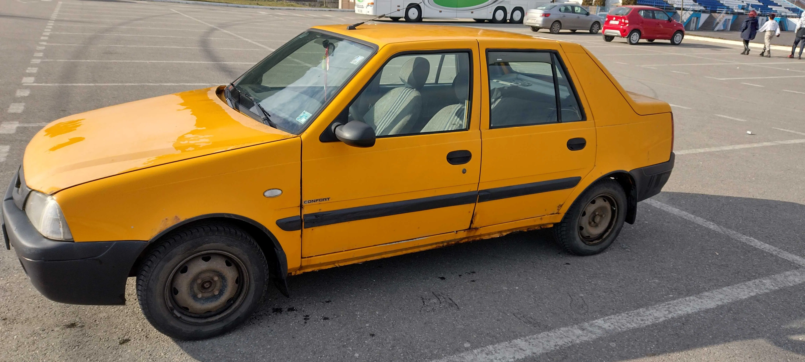
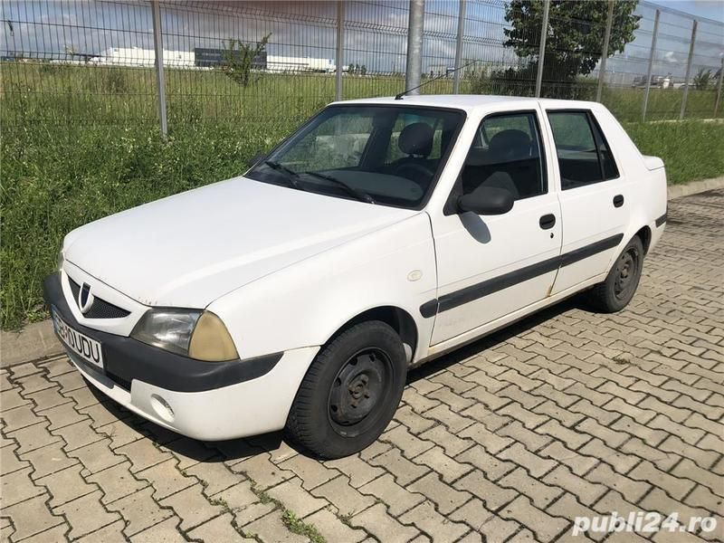

Dacia Solenza

Dacia Solenza este o berlină cu hayon de mici dimensiuni, produsă între martie 2003 și iulie 2005 de uzina Dacia. Solenza are la bază modelul SupeRNova, dar cu un aspect împrospătat ce anunța trăsăturile noii identități de marcă.
Exteriorul are o linie mai modernă și mai aerodinamică, iar bordul a fost integral redesenat, devenind mai ergonomic. Materialele folosite la interior sunt de calitate mai bună decât la SuperRNova.
Din noiembrie 2003 a fost îmbunătățită structura de rezistență a mașinii, variantele superioare de echipare primind și airbag pentru șofer, Solenza fiind primul model Dacia care emite pretenții moderne de siguranță pentru ocupanții acestuia. A fost de asemenea, primul autoturism românesc de dimensiuni mici,conceptie românească , care a fost echipat cu direcție asistată servo, geamuri electrice la partea din față, acestea fiind premiere pentru Dacia, de asemenea unele variante au fost echipat cu abs, dar echiparea a fost făcută de utilizatorul final. De asemenea a fost primul autoturism românesc cu motor diesel (celelalte variante diesel de automobile erau Aro si TV si dacia 1304, acestea erau însă utilitare), variantele de top aveau jante de 14".
Modelul a fost bine primit pe piață, având și cifre bune la export. Cu toate că cererea era încă mare pe piață, compania Dacia a decis oprirea producției în vara anului 2005, concentrându-se pe creșterea producției modelului Dacia Logan. Pe piața automobilelor la mâna a doua, Dacia Solenza și-a păstrat valoarea multă vreme, în ciuda unor kilometraje mari.
Solenza a fost oferită în cinci nivele de echipare: Europa, Confort, Rapsodie, Clima și Scala. Versiunea de bază Europa include printre altele antidemaraj electronic. Confort oferă în plus airbag pentru șofer, bare de protecție în culoarea caroseriei, turometru, închidere centralizată și telecomandă, radiocasetofon. Rapsodie adaugă servodirecție, Clima adaugă aer condiționat, proiectoare de ceață și geamuri electrice la ușile din față. Versiunea de top Scala are în plus eleron posterior în culoarea caroseriei, radio CD și jante de aliaj.
Motorizări
Pentru acest model au existat două versiuni de motorizare: una pe benzină de 1,4 litri similară cu cea de pe SupeRNova și una diesel de 1,9 litri, identică cu cea de pe Renault Kangoo și asemănătoare cu cea de pe Dacia Pick-Up. Începând din 2005, modificarea evacuării și a gestiunii electronice a injecției au permis încadrarea în normele de poluare Euro 4, până la acel moment încadrându-se în normele Euro 3.